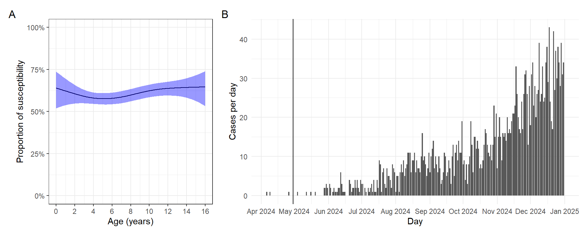
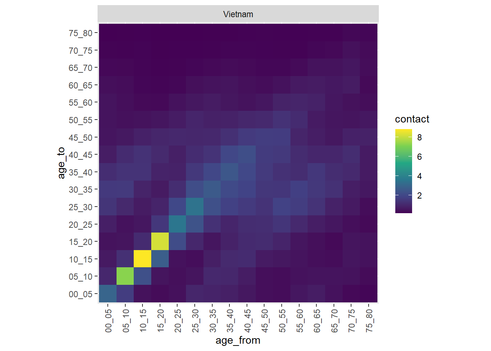

Code
library(readxl)
library(tidyverse)
library(lubridate)
library(sf)
library(janitor)
library(stringr)
library(magrittr)
library(stringi)
library(paletteer)
library(patchwork)
library(epitools)
invisible(Sys.setlocale("LC_TIME", "English"))Data:
Serological data from Sep 2022 - Apr 2024
Line listing cases data from 2018-2019, and 2024-2025 outbreak
Social contact matrix data of Vietnam in 2020
We will follow (Hens et al. 2015), conducting three steps:
Model the serological data from April 2024 in children under 15.
Derive the age-dependent susceptibility profile for April 2024.
Use social contact data and the inferred next generation matrix to estimate the effective reproduction number and the age-dependent relative incidence.
I used a generalized additive model to estimate measles seroprevalence as a function of age, with a complementary log-log link function and cubic spline smooth components. We assumed lifelong immunity.
\[ clogclog(\pi(a)) = s(age\ at \ 2024) \]
library(readxl)
library(tidyverse)
library(lubridate)
library(sf)
library(janitor)
library(stringr)
library(magrittr)
library(stringi)
library(paletteer)
library(patchwork)
library(epitools)
invisible(Sys.setlocale("LC_TIME", "English"))measles_1825_eoc <- read_excel("D:/OUCRU/sero_measles_nd2/data/SOI_2018-2025_EOC.xlsx",
sheet = "SOI_2018-2025")
sero_ch1 <- read_csv("D:/OUCRU/sero_measles_nd2/data/20240808_measles_titer_oucru.csv")
sero <- read_excel("D:/OUCRU/sero_measles_nd2/data/20240811_measles_titer_hcdc_with_meta.xlsx")
### HCMC map
map_path <- "D:/OUCRU/HCDC/project phân tích sero quận huyện/"
vn_qh <- st_read(dsn = file.path(map_path, "gadm41_VNM.gpkg"), layer = "ADM_ADM_2")
vn_qh1 <- vn_qh %>%
clean_names() %>% ## cho thành chữ thường
filter(
str_detect(
name_1,
"Hồ Chí Minh"
)
)
qhtp <- vn_qh1[-c(14,21),]
qhtp$geom[qhtp$varname_2 == "Thu Duc"] <- vn_qh1[c("21","24","14"),] %>%
st_union()
qhtp <- qhtp %>% st_cast("MULTIPOLYGON")
qhtp$varname_2 <- stri_trans_general(qhtp$varname_2, "latin-ascii") %>%
tolower() %>%
str_remove("district") %>%
trimws(which = "both")
qhtp$nl_name_2 <- c("BC","BTân","BT","CG","CC","GV",
"HM","NB","PN","1","10","11","12",
"3","4","5","6","7","8","TB",
"TP","TĐ")
centroids <- st_centroid(qhtp)
district_xy <- centroids %>%
mutate(
lon = st_coordinates(centroids)[,1],
lat = st_coordinates(centroids)[,2]
) %>%
select(district = varname_2, lon, lat) %>%
as.data.frame() %>%
select(-geom)
meases_1812_3hos <- measles_1825_eoc %>%
clean_names() %>%
filter(ten_bv %in% c("Bệnh viện Nhi đồng 1",
"Bệnh viện Nhi Đồng 1",
"BV Nhi Đồng 1",
"Bệnh viện Nhi đồng thành phố",
"Bệnh viện Nhi đồng 2",
"Bệnh viện Nhi Đồng 2")) %>%
mutate(
district = quan_huyen %>%
str_replace_all(
c("Quận 2" = "Thủ Đức",
"Quận 9" = "Thủ Đức")) %>%
str_remove("Quận|Huyện|Thành phố|QUẬN") %>%
trimws(which = "both") %>%
stri_trans_general("latin-ascii") %>%
tolower(),
admission = as.Date(ngay_nv,format = "%d/%m/%Y"),
hospital = ten_bv %>%
str_replace_all(
c("BV Nhi Đồng 1" = "Bệnh viện Nhi Đồng 1")) %>%
trimws(which = "both") %>%
stri_trans_general("latin-ascii") %>%
tolower() %>%
factor(levels = c("benh vien nhi dong 1",
"benh vien nhi dong 2",
"benh vien nhi dong thanh pho"),
labels = c("Children's Hospital 1",
"Children's Hospital 2",
"City Children's Hospital")),
out_year = case_when(
nam_nv %in% c(2018,2019) ~ "2018-2019",
nam_nv %in% c(2024,2025) ~ "2024-2025"
),
dob = as.Date(ngay_sinh,format="%d/%m/%Y"),
age2 = interval(dob, admission) / years(1),
age_gr = cut(age2,
breaks = c(0,5,10,15,100),
labels = c("0-5","5-10","10-15",">15"))
) %>%
filter(district %in% qhtp$varname_2) %>%
distinct(.keep_all = TRUE)
sero_ch1a <- sero_ch1 %>%
select(commune,district,doc,moc,yoc,dob,mob,yob,pos,age) %>%
na.omit(district) %>%
mutate(district = district %>%
trimws(which = "both") %>%
stri_trans_general("latin-ascii") %>%
tolower(),
col_time = make_date(yoc,moc,doc),
hospital = rep("CH1"),
dob = make_date(yob,mob,dob))
sero_ch2_cch <- sero %>%
select(pos,commune,district,age,age_1y,age_5y,sampling_period,hospital,doc,dob) %>%
mutate(
district = district %>%
stri_trans_general("latin-ascii") %>%
str_remove("Tp|^0") %>%
trimws(which = "both") %>%
tolower() ,
samp_month = month(sampling_period),
samp_year = year(sampling_period),
col_time = doc
)
sero_3bv <- rbind(sero_ch1a[,c("age","commune","district","pos","col_time","dob","hospital")],
sero_ch2_cch[,c("age","commune","district","pos","col_time","dob","hospital")]) %>%
mutate(age2 = round(age)) %>%
left_join(.,district_xy, by = join_by(district)) %>%
mutate(yoc = year(col_time),
moc = month(col_time),
doc = day(col_time),
age_at_apr24 = interval(dob, as.Date("2024-04-30")) / years(1),
age424 = round(age_at_apr24))library(mgcv)
epicurve <- meases_1812_3hos %>%
group_by(admission) %>%
count() %>%
filter(month(admission) >= 4 & year(admission) >=2024) %>%
ggplot(aes(x = admission,y = n))+
geom_col()+
scale_y_continuous(name = "Cases per day")+
scale_x_date(name = "Day",breaks = "1 month",date_labels = "%b %Y")+
geom_vline(xintercept = as.Date("2024-04-30"))+
labs(tag = "B")+
theme_minimal()
age_profile <- function(data, age_values = seq(0, 16, le = 512), ci = .95) {
model <- data %>%
group_by(age424) %>%
count(pos) %>%
pivot_wider(names_from = pos,
values_from = n,
names_prefix = "pos_") %>%
replace(is.na(.), 0) %>%
ungroup() %>%
mutate(total = pos_0+pos_1,
sp = pos_1/total,
sneg = 1 - sp) %>%
gam(cbind(pos_1,total)~s(age424,bs = "cr"),
family = binomial(link = "cloglog"),
data = .)
link_inv <- family(model)$linkinv
df <- nrow(data) - length(coef(model))
p <- (1 - ci) / 2
model |>
predict(list(age424 = age_values), se.fit = TRUE) %>%
c(list(age = age_values), .) |>
as_tibble() |>
mutate(lwr = link_inv(fit + qt( p, df) * se.fit),
upr = link_inv(fit + qt(1 - p, df) * se.fit),
fit = link_inv(fit)) |>
select(- se.fit)
}
age_profile_apr24 <- age_profile(sero_3bv) %>%
mutate(sus = 1-fit,
lwr_s = 1-lwr,
upr_s = 1-upr) %>%
ggplot(aes(x = age,y = sus))+
geom_line()+
geom_ribbon(aes(ymin = lwr_s,ymax = upr_s),fill = "blue",alpha = 0.4)+
scale_y_continuous(limits = c(0,1),
name = "Proportion of susceptibility",
labels = scales::label_percent())+
scale_x_continuous(limits = c(0,16),
breaks = seq(0,16,by=2),
name = "Age (years)")+
labs(tag = "A")+
theme_bw()
age_profile_apr24 + epicurve +
plot_layout(widths = c(1, 2))
We will use contactdata package (Gruson, n.d.)
library(contactdata)
countries <- c("Vietnam")
contact_data <- contact_df_countries(countries,
location = "all",
geographic_setting = c("urban"),
data_source = c("2020"))
ggplot(contact_data, aes(x = age_from, y = age_to, fill = contact)) +
geom_tile() +
facet_wrap(~country) +
coord_equal() +
theme(axis.text.x = element_text(angle = 90, vjust = 0.5, hjust = 1)) +
scale_fill_viridis_c()
To infer next generation matrix, I found the talk of Prof.Niel Hens